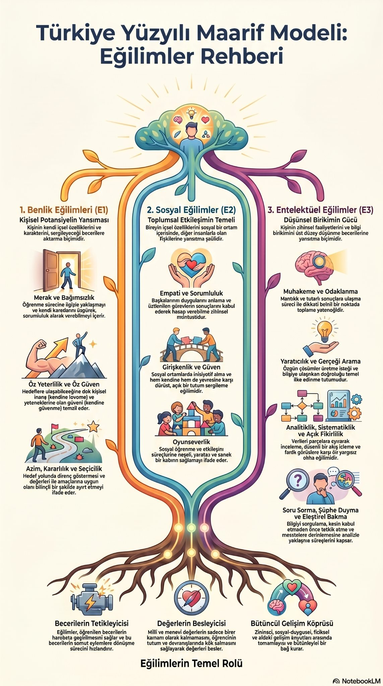
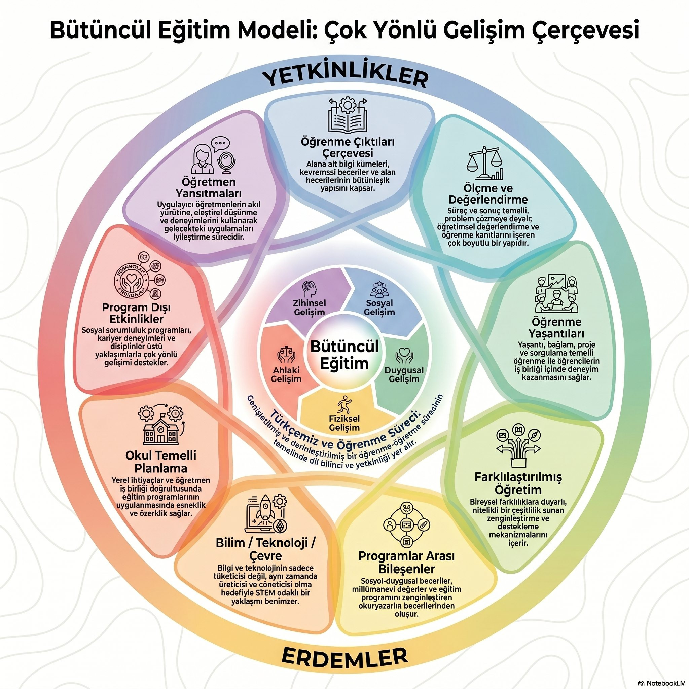
2. Bütüncül Eğitim Modeli
Görseli aç / kaydet ↗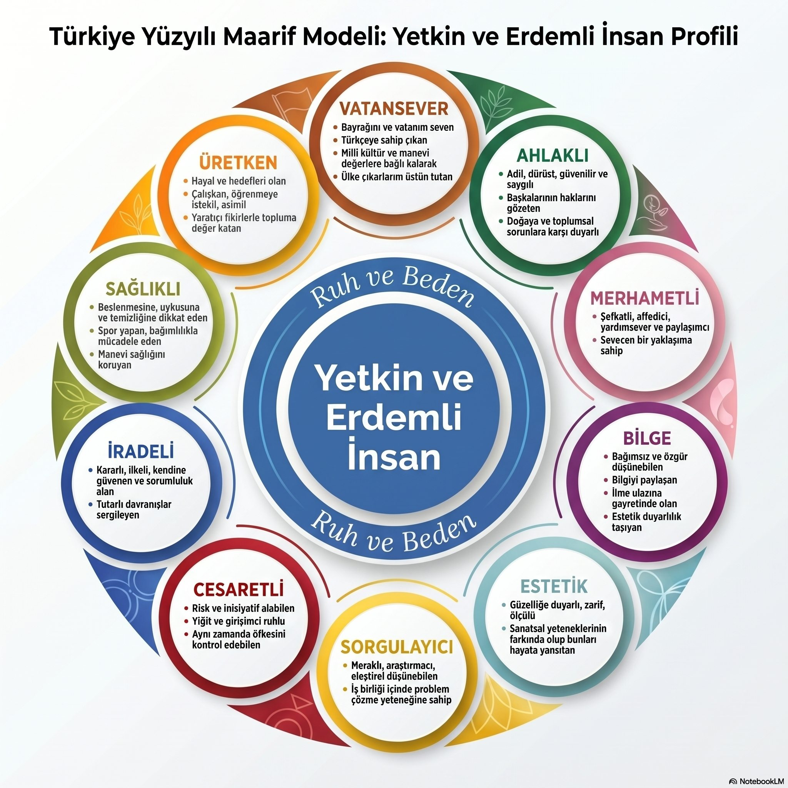
3. Yetkin ve Erdemli İnsan Profili
Görseli aç / kaydet ↗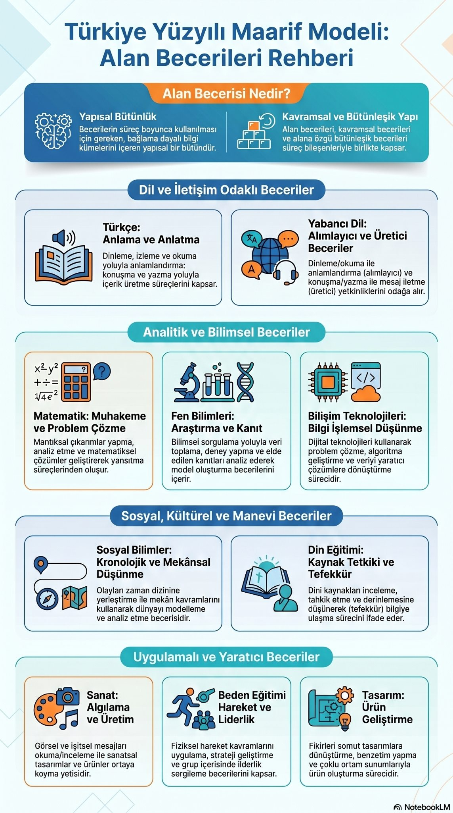
4. Alan Becerileri Rehberi
Görseli aç / kaydet ↗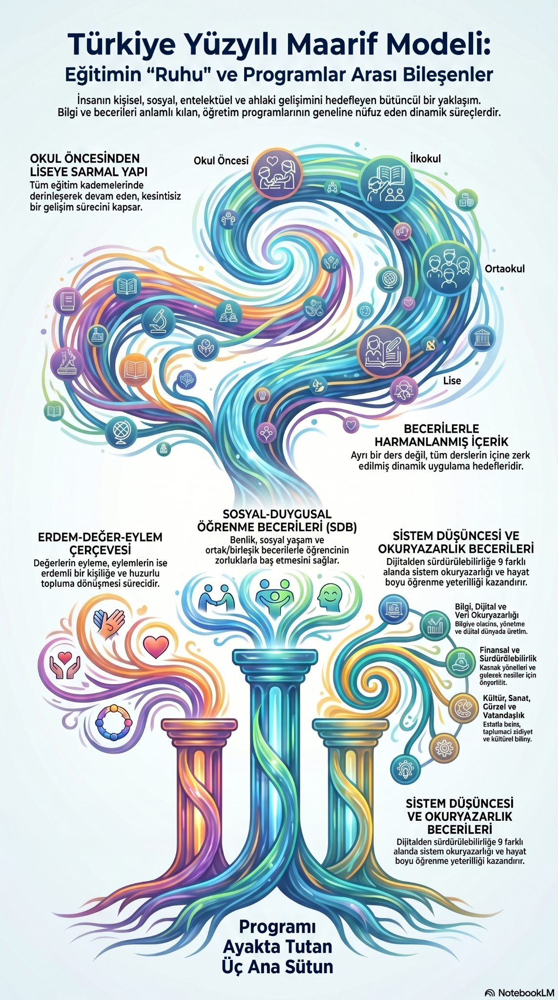
5. Eğitimin Ruhu ve Programlar Arası Bileşenler
Görseli aç / kaydet ↗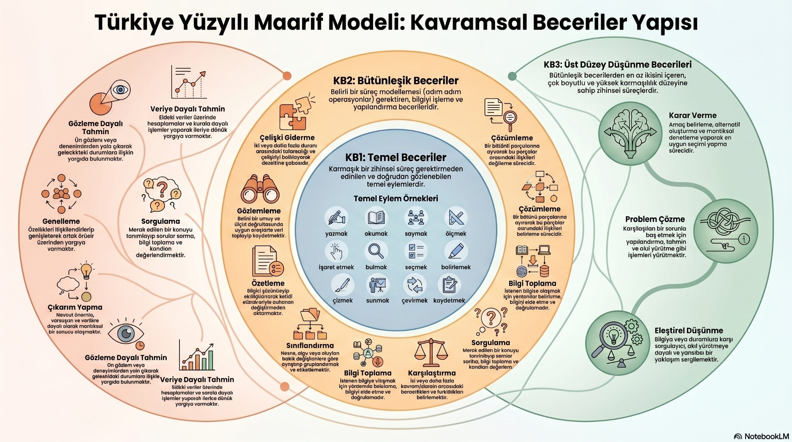
6. Kavramsal Beceriler Yapısı
Görseli aç / kaydet ↗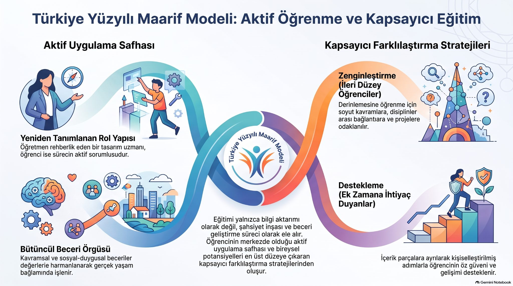
7. Aktif Öğrenme ve Kapsayıcı Eğitim
Görseli aç / kaydet ↗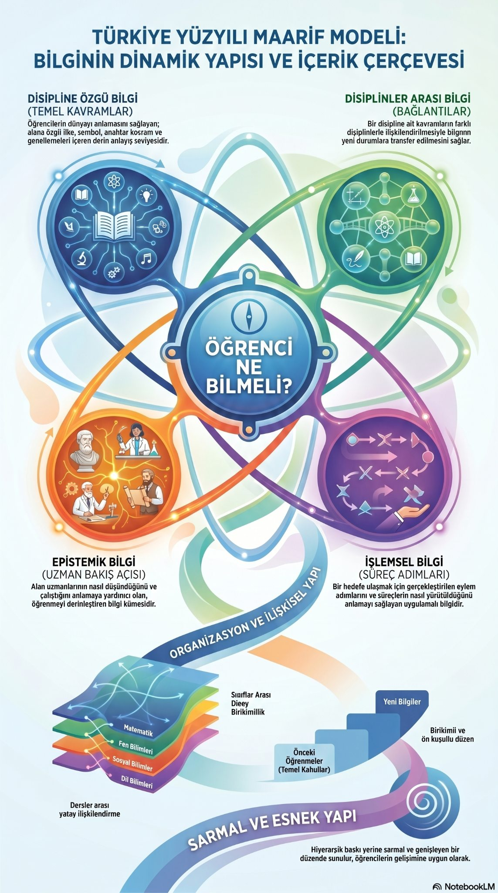
8. Bilginin Dinamik Yapısı ve İçerik Çerçevesi
Görseli aç / kaydet ↗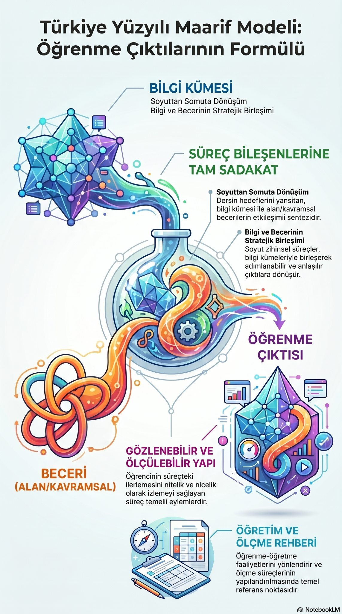
9. Öğrenme Çıktılarının Formülü
Görseli aç / kaydet ↗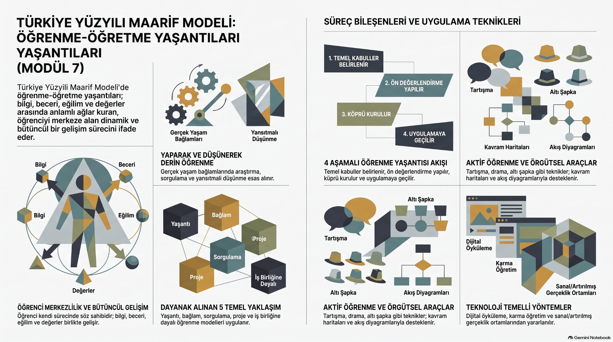
10. Öğrenme-Öğretme Yaşantıları
Görseli aç / kaydet ↗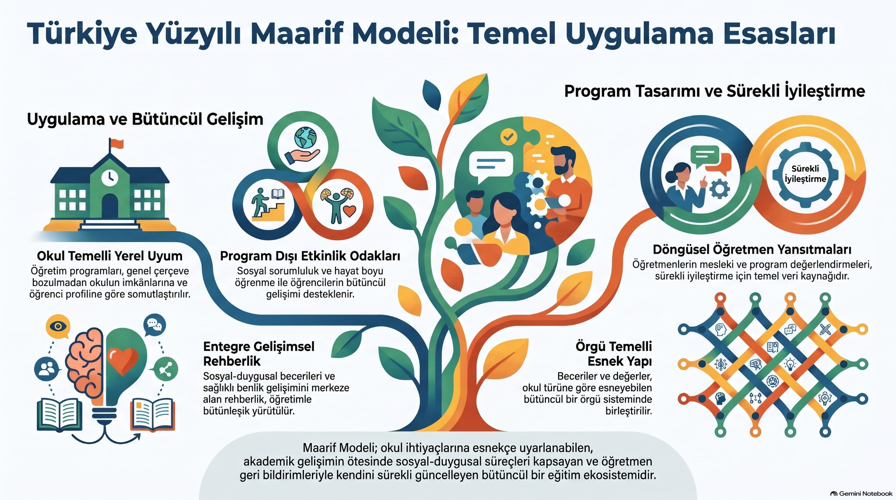